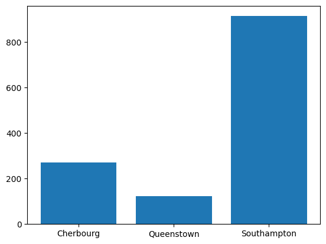

import matplotlib.pyplot as pltPlotting with matplotlib

Justin Post
Remember that our first steps with a data set are generally to try and get to know our data through an exploratory data analysis (EDA).
- EDA generally consists of a few steps:
- Understand how your data is stored
- Do basic data validation
- Determine rate of missing values
- Clean data up data as needed
- Investigate distributions
- Univariate measures/graphs
- Multivariate measures/graphs
- Apply transformations and repeat previous step
Our overall goal is to describe the distributions of our variables. We have two types of variables: - categorical - data values represent labels - numerical - data values are numeric where we can do math on the values
How we summarize the distribution depends on which types of variable(s) we are working with. We’ve discussed how to find numerical summaries already: - frequencies for categorical variables (via contingency tables) - measures of center and spread for numeric variables
These types of measures are great for telling us about certain aspects of a distribution, such as a quick measure of center or spread, and are very useful for comparing two distributions. However, we often want to understand the shape of the distribution a variable might take on. This is best investigated via graphical summaries!
- Common Graphical summaries
- Bar plots (categorical data)
- Histograms
- Box plots
- Scatter plots
- Bar plots (categorical data)
Note: These types of webpages are built from Jupyter notebooks (.ipynb files). You can access your own versions of them by clicking here. It is highly recommended that you go through and run the notebooks yourself, modifying and rerunning things where you’d like!
Plotting Systems in python
matplotlib: based on matlab plotting. Similar to base R plottingseaborn: an abstraction ofmatplotlibbut still growingBokeh: for interactive visuals via HTMLplotly: general plotting system that has a python moduleplotnine: a ggplot port
Plotting with matplotlib
- Two APIs (or ways to interact with matplotlib)
- Explicit axes interface (object oriented api)
- Implicit pyplot interface (what we’ll cover)
- When using the implicit API we use functions like
plt.figure(),plt.plot(...),plt.scatter(),plt.bar(), orplt.hist()
- We then determine axes and artist elements
- We add labels, legends, and annotations
- Finally we produce the plot (and would then usually close the plot to denote that we are done working on it - not usually needed when programming in
jupyternotebooks)plt.show()thenplt.close()
Reading in Data to Plot
- Consider data on titanic passengers in
titanic.csv - This is a really common dataset to play around with
- Let’s start with a focus on plotting categorical data
We start by importing matplotlib.pyplot as plt. This is a common reference. The pyplot module has the functions we’ll use to do our plotting such as pyplot.hist() or pyplot.plot().
Now we’ll read in the titanic dataset using pandas. This dataset is available at: https://www4.stat.ncsu.edu/~online/datasets/titanic.csv
import pandas as pd
#readin data
titanic_data = pd.read_csv("https://www4.stat.ncsu.edu/~online/datasets/titanic.csv")Some of the variables in the data have a lot of missing values. Let’s drop those. We also saw that converting some variables to category type variables was useful for having better labeling. Let’s do that as well.
#remove some columns and a bad row
sub_titanic_data = titanic_data.drop(columns = ["body", "cabin", "boat"], axis = 1) \
.iloc[:(titanic_data.shape[0]-1)]
#create category versions of the variables
#embarked variable
sub_titanic_data["embarkedC"] = sub_titanic_data.embarked.astype("category")
sub_titanic_data.embarkedC = sub_titanic_data.embarkedC.cat.rename_categories(
["Cherbourg", "Queenstown", "Southampton"])
#sex variable
sub_titanic_data["sexC"] = sub_titanic_data.sex.astype("category")
sub_titanic_data.sexC = sub_titanic_data.sexC.cat.rename_categories(["Female", "Male"])
#survived variable
sub_titanic_data["survivedC"] = sub_titanic_data.survived.astype("category")
sub_titanic_data.survivedC = sub_titanic_data.survivedC.cat.rename_categories(["Died", "Survived"])Barplots
Categorical variable - entries are a label or attribute
Our goal is to describe the distribution of these variables. We do this by creating summary counts or frequncy counts
- Barplots give a visual of those counts!
- Use
plt.bar()xrepresents the categoriesheightthe corresponding heights
- Use
We have three categorical variables we’ll investigate. Let’s start with the embarkedC variable.
We know the x values (the category labels). We just need the heights to plot. We can find the heights by creating a one-way contingency table!
table = sub_titanic_data.embarkedC.value_counts()
table| count | |
|---|---|
| embarkedC | |
| Southampton | 914 |
| Cherbourg | 270 |
| Queenstown | 123 |
Now we’ll use plt.bar() and map the categories (via calling the .categories attribute from our column of data) to x and the contingency table counts to height.
The x and height values just need to be paired up.
#get the categories
print(sub_titanic_data.embarkedC.cat.categories)
#note that the ordering does not line up with the counts
print(table)Index(['Cherbourg', 'Queenstown', 'Southampton'], dtype='object')
embarkedC
Southampton 914
Cherbourg 270
Queenstown 123
Name: count, dtype: int64As the ordering isn’t the same, we’ll have to be careful to make sure things are paired up appropriately!
index = [1, 2, 0]
table[index]FutureWarning: Series.__getitem__ treating keys as positions is deprecated. In a future version, integer keys will always be treated as labels (consistent with DataFrame behavior). To access a value by position, use `ser.iloc[pos]`
table[index]| count | |
|---|---|
| embarkedC | |
| Cherbourg | 270 |
| Queenstown | 123 |
| Southampton | 914 |
plt.bar(x = sub_titanic_data.embarkedC.cat.categories, height = table[index])
#plt.show() would be needed if we weren't in a notebook<BarContainer object of 3 artists>
Nice! A good looking barplot. This is our first step. Next we want to make it look a bit nicer by adding labels, legends, and annotations.
In this case, we can add a better xlabel, ylabel, and title.
plt.bar(x = sub_titanic_data.embarkedC.cat.categories, height = table[index])
#as these are all being run in the same cell, these get added to the plot created
plt.xlabel("Port Embarked")
plt.ylabel("Number of People")
plt.title("Most Embarked in the Southampton Port")Text(0.5, 1.0, 'Most Embarked in the Southampton Port')- A common way to resize the plot is to first call
plt.subplots()and specify thefigsizeargument. We give this atupleof the width and height we want.
plt.subplots(figsize = (12, 5))
plt.bar(x = sub_titanic_data.embarkedC.cat.categories, height = table[index])
plt.xlabel("Port Embarked")
plt.ylabel("Number of People")
plt.title("Most Embarked in the Southampton Port")Text(0.5, 1.0, 'Most Embarked in the Southampton Port')
Stacked Barplot with matplotlib
If we want to include a second categorical variable in our plot we can do so in a few ways. The first is to color the bars by the values of the other variable. In this way we can see how that variable distributes across the categories of our current variable!
- The first step is to create the table of counts for our two variables
- We’ll do this via the
pd.crosstab()function
stack_table = pd.crosstab(sub_titanic_data.embarkedC, sub_titanic_data.survivedC)
stack_table| survivedC | Died | Survived |
|---|---|---|
| embarkedC | ||
| Cherbourg | 120 | 150 |
| Queenstown | 79 | 44 |
| Southampton | 610 | 304 |
To manually build this bar plot with plt.bar() we can do the following: - Put our embarked variable labels on the x-axis - Create bars with heights corresponding to the counts for Died. - Create a second set of bars that sit directly on top of those bars with heights corresponding to the Survived counts - These bars should be different colors to denote the Died vs Survived counts!
Remember that as we work on a plot within a cell, we continue to add to it unless we use plt.show(). This means we can use two calls to plt.bar() within the same cell and it will keep drawing on the same plot.
#we want to get the heights for the Died bars
stack_table.loc[:, "Died"]| Died | |
|---|---|
| embarkedC | |
| Cherbourg | 120 |
| Queenstown | 79 |
| Southampton | 610 |
#notice that these now line up with our category order so we don't need to change that
sub_titanic_data.embarkedC.cat.categoriesIndex(['Cherbourg', 'Queenstown', 'Southampton'], dtype='object')Our first step is to plot these on a bar plot. We’ll add a label argument to plt.bar() which will make it easy to add a legend at the end.
plt.bar(
x = sub_titanic_data.embarkedC.cat.categories,
height = stack_table.loc[:, "Died"],
label = "Died")<BarContainer object of 3 artists>Now we want to find the Survived counts and put those on top of these bars.
stack_table.loc[:, "Survived"]| Survived | |
|---|---|
| embarkedC | |
| Cherbourg | 150 |
| Queenstown | 44 |
| Southampton | 304 |
We can add a bottom = argument to our second plt.bar() call to specify where the bottom of the bars should start (the counts of the Died!)
plt.bar(
x = sub_titanic_data.embarkedC.cat.categories,
height = stack_table.loc[:, "Died"],
label = "Died")
plt.bar(
x = sub_titanic_data.embarkedC.cat.categories,
height = stack_table.loc[:, "Survived"],
bottom = stack_table.loc[:, "Died"],
label = "Survived"
)<BarContainer object of 3 artists>
Nice! Colors are automatically created for us. Now we just need to add some nice labels to help us understand the plot.
We’ll use plt.legend() to produce a legend based off the labels used.
plt.bar(
x = sub_titanic_data.embarkedC.cat.categories,
height = stack_table.loc[:, "Died"],
label = "Died")
plt.bar(
x = sub_titanic_data.embarkedC.cat.categories,
height = stack_table.loc[:, "Survived"],
bottom = stack_table.loc[:, "Died"],
label = "Survived"
)
plt.xlabel("Port Embarked")
plt.ylabel("Number of People")
plt.title("Most Embarked in the Southampton Port \n A higher proportion survived from Cherbourg")
plt.legend(loc = 0)<matplotlib.legend.Legend at 0x796e528860e0>Side-by-Side Barplot with matplotlib
Alternative to the stacked bar plot is the side-by-side bar plot. This is the same idea but we put the bars for the categories next to each other instead of on top of eachother.
This is similar to our first bar plot but we need to have different x locations for each bar!
Let’s take this bar plot of just the Died with port of embarkment.
We can change the x values from the categories to numbers.
plt.bar(
x = [1, 2, 3],
height = stack_table.loc[:, "Died"],
label = "Died")<BarContainer object of 3 artists>Now we can specify the widths of the bars via the width argument. By default they are almost 1 here. Let’s make them smaller.
plt.bar(
x = [1, 2, 3],
height = stack_table.loc[:, "Died"],
width = 0.4,
label = "Died")<BarContainer object of 3 artists>Ok, now let’s just fix the x-axis labels! This can be done by using plt.xticks(). Here we specify the x values where we want our axis values to go along with corresponding labels.
plt.bar(
x = [1, 2, 3],
height = stack_table.loc[:, "Died"],
width = 0.4,
label = "Died")
plt.xticks([1, 2, 3], sub_titanic_data.embarkedC.cat.categories)([<matplotlib.axis.XTick at 0x796e52385c30>,
<matplotlib.axis.XTick at 0x796e52385c00>,
<matplotlib.axis.XTick at 0x796e52385450>],
[Text(1, 0, 'Cherbourg'),
Text(2, 0, 'Queenstown'),
Text(3, 0, 'Southampton')])Sweet! Now we just add the bars for the Survived group next to these!
plt.bar(
x = [1, 2, 3],
height = stack_table.loc[:, "Died"],
width = 0.4,
label = "Died")
plt.bar(
x = [1.4, 2.4, 3.4],
height = stack_table.loc[:, "Survived"],
width = 0.4,
label = "Survived")
plt.xticks([1.2, 2.2, 3.2], sub_titanic_data.embarkedC.cat.categories)([<matplotlib.axis.XTick at 0x796e523f05e0>,
<matplotlib.axis.XTick at 0x796e523f05b0>,
<matplotlib.axis.XTick at 0x796e523a5ff0>],
[Text(1.2, 0, 'Cherbourg'),
Text(2.2, 0, 'Queenstown'),
Text(3.2, 0, 'Southampton')])Now we’ll fancy it up with some labels and titles.
plt.bar(
x = [1, 2, 3],
height = stack_table.loc[:, "Died"],
width = 0.4,
label = "Died")
plt.bar(
x = [1.4, 2.4, 3.4],
height = stack_table.loc[:, "Survived"],
width = 0.4,
label = "Survived")
plt.xticks([1.2, 2.2, 3.2], sub_titanic_data.embarkedC.cat.categories)
plt.xlabel("Port Embarked")
plt.ylabel("Number of People")
plt.legend(loc = 0)
plt.title("Most Embarked in the Southampton Port \n A higher proportion survived from Cherbourg")Text(0.5, 1.0, 'Most Embarked in the Southampton Port \n A higher proportion survived from Cherbourg')Plotting Numeric Variables
Whoa - that was way too much work to create side-by-side bar plots… We could go through similar processes to create histograms, scatterplots, etc…
Functions like plt.scatter() aren’t bad to work with:
plt.scatter(sub_titanic_data.age, sub_titanic_data.fare)
plt.xlabel("Age")
plt.ylabel("Fare")Text(0, 0.5, 'Fare')But customizing the plots is a good bit of work. pandas has functionality to do plotting on data frames that will save us time!
However, it is really useful to know the basics of matplotlib as many of the plotting systems are built on it!
Quick Video
This video shows an example of using matplotlib plotting! Remember to pop the video out into the full player.
The notebook written in the video is available here.
from IPython.display import IFrame
IFrame(src="https://ncsu.hosted.panopto.com/Panopto/Pages/Embed.aspx?id=380014c4-f479-4ab1-b0d6-b1030168e8d1&autoplay=false&offerviewer=true&showtitle=true&showbrand=true&captions=false&interactivity=all", height="405", width="720")Recap
Must understand the type of data you have to visualize it
Goal: Describe the distribution
matplotlibcan create custom plots- Lots of work to specify everything yourself
Many other plotting paradigms to consider!
pandasandseabornnext
If you are on the course website, use the table of contents on the left or the arrows at the bottom of this page to navigate to the next learning material!
If you are on Google Colab, head back to our course website for our next lesson!